Recent large-scale diffusion models such as SD3.5 (8B) and FLUX (11B) deliver outstanding image quality, but their excessive memory and compute demands limit deployment on resource-constrained devices. Existing depth-pruning methods achieve reasonable compression on smaller U-Net-based models, yet fail to scale to these large MMDiT-based architectures without significant quality degradation.
HierarchicalPrune identifies a novel dual hierarchical structure in MMDiT-based diffusion models: an inter-block hierarchy (early blocks establish semantics, later blocks handle refinements) and an intra-block hierarchy (varying importance of subcomponents within each block). It exploits this structure through three principled techniques:
Combined with INT4 quantisation, HierarchicalPrune achieves 77.5–80.4% memory reduction with minimal quality loss (4.8–5.3% user-perceived degradation compared to the original model) with 95% confidence intervals, significantly outperforming prior methods (11.1–52.2% degradation). A user study with 85 participants confirms the superiority of our approach.
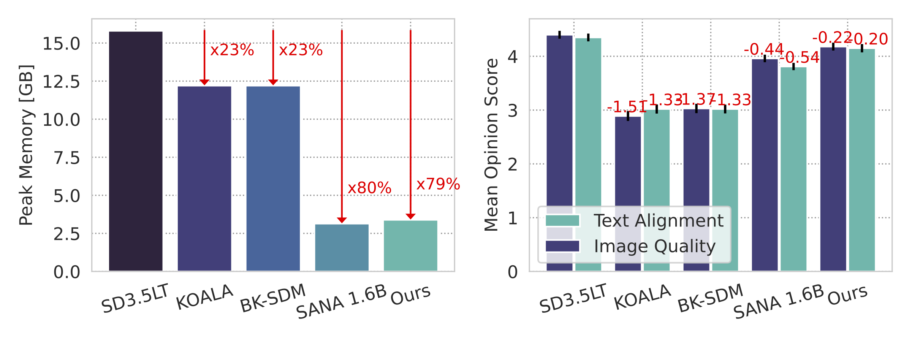
HierarchicalPrune’s compression framework leverages MMDiT’s two-fold hierarchy (inter-block: early blocks establish semantics, later blocks refine; intra-block: varying subcomponent importance). It comprises (1) HPP, maintaining early blocks while pruning later ones, (2) PWP, freezing critical early blocks during distillation, and (3) SGDistill, applying inverse weights: minimal updates to sensitive blocks and subcomponents. The resulting framework enables effective compression while preserving model capabilities.
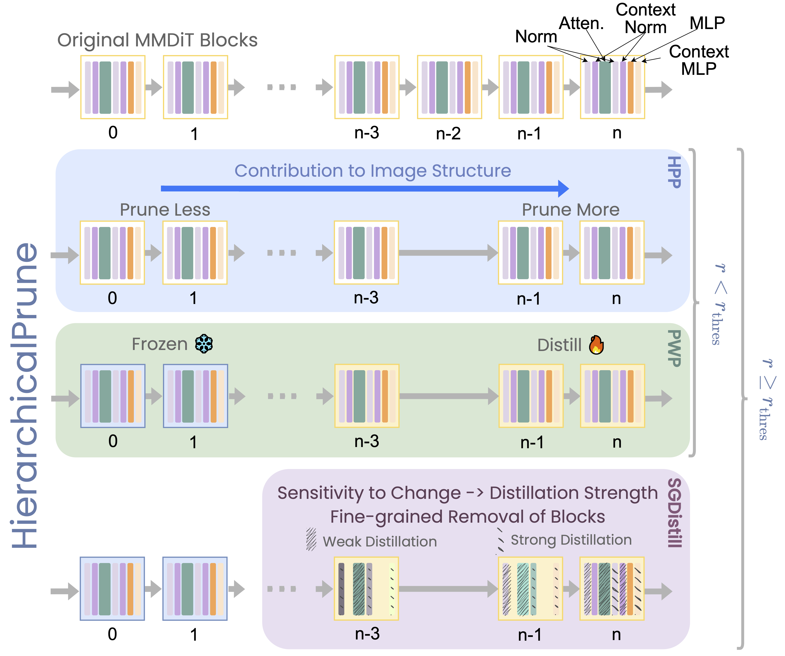
We perform fine-grained contribution analysis on SD3.5 Large Turbo to understand the importance of each transformer block and its subcomponents. Beyond conventional full-block removal, we analyse individual and joint subcomponent removal, uncovering an intra-block hierarchy: different subcomponent types exhibit distinct sensitivity patterns, and their pairwise interactions reveal both critical interdependencies and potentially redundant pathways within the MMDiT architecture.
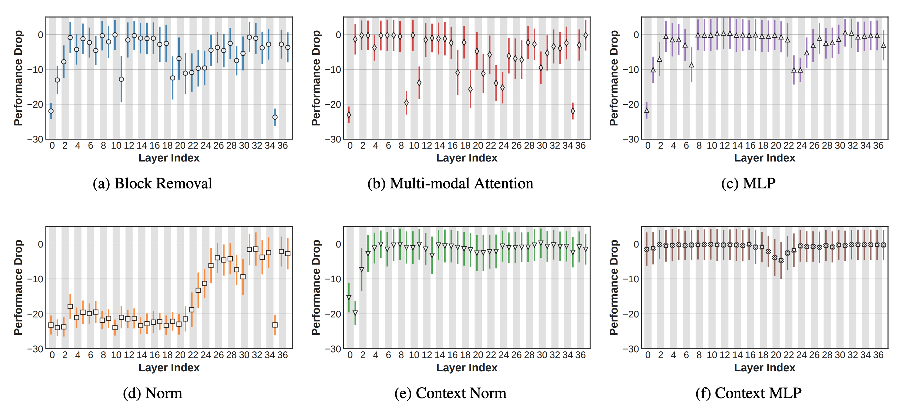
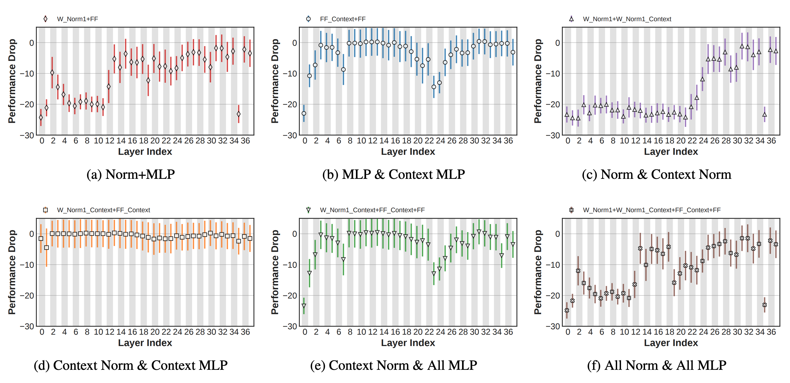
Side-by-side comparison at 1024×1024 resolution. * Different architecture, shown for reference.
SD3.5 Large
(Original)
BK-SDM
KOALA
Ours
SANA-Sprint*
(Diff. Arch.)
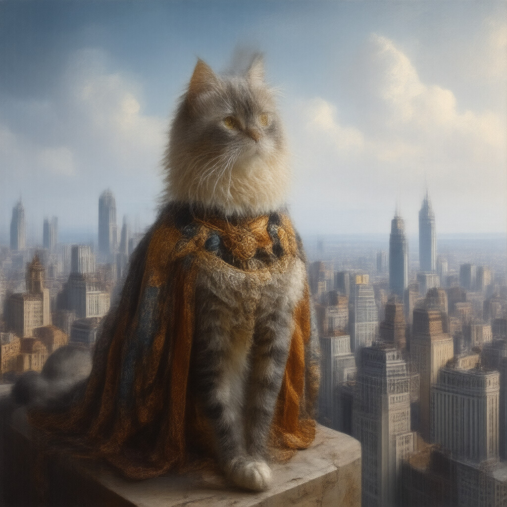
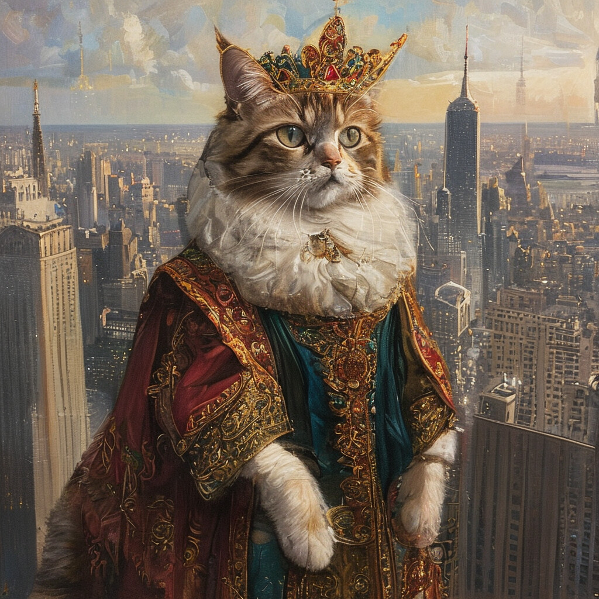
“A painting of a Persian cat dressed as a Renaissance king, standing on a skyscraper overlooking a city.”
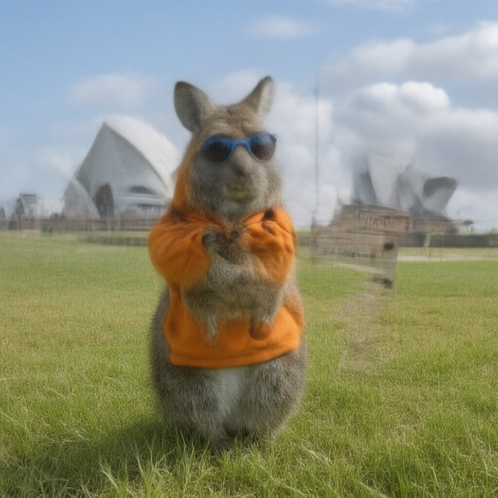
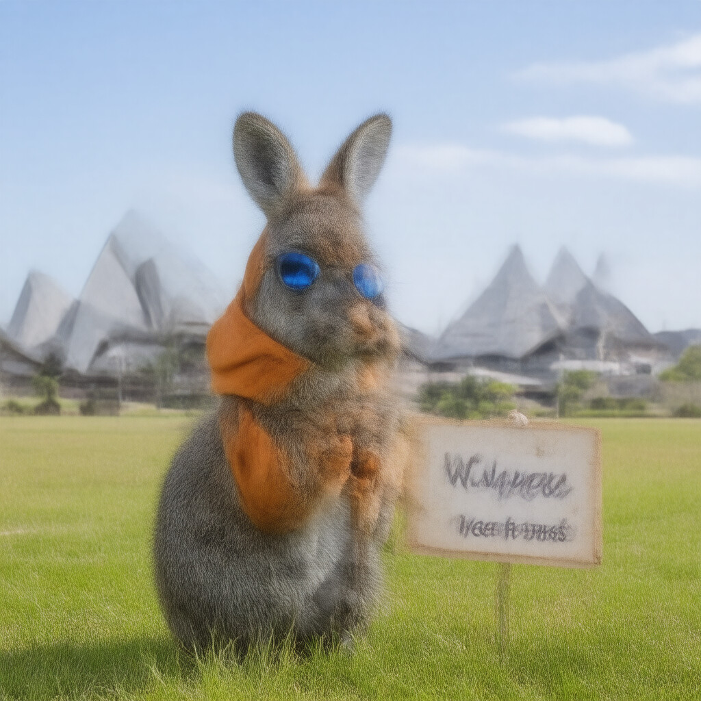
“A kangaroo in an orange hoodie and blue sunglasses stands on the grass in front of the Sydney Opera House”
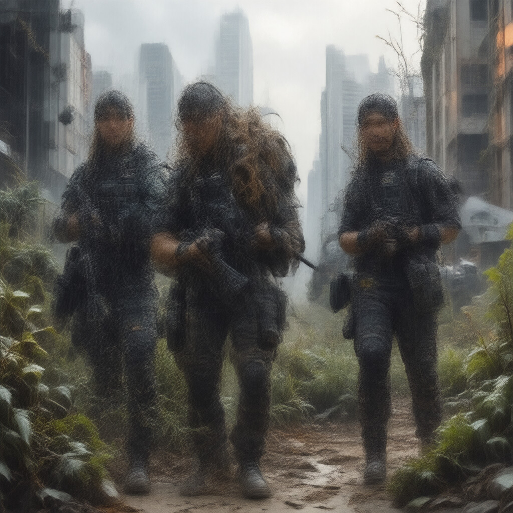
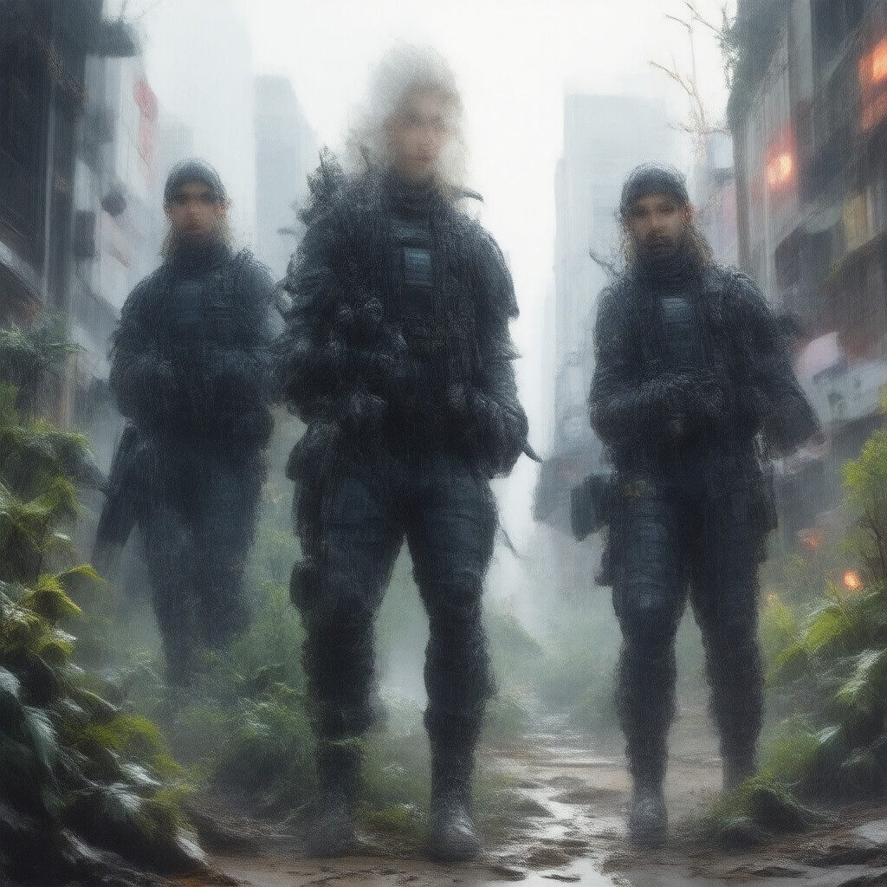
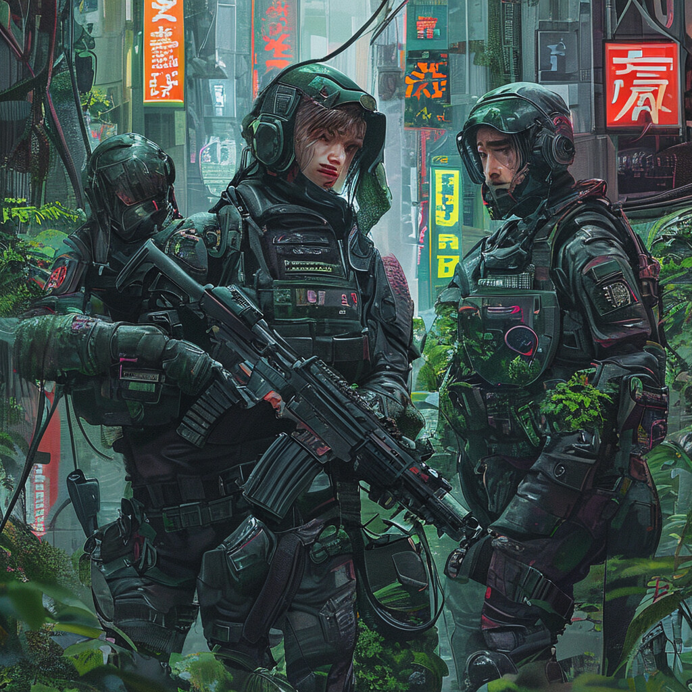
“A digital illustration of a beautiful and alluring American SWAT team in dramatic poses”
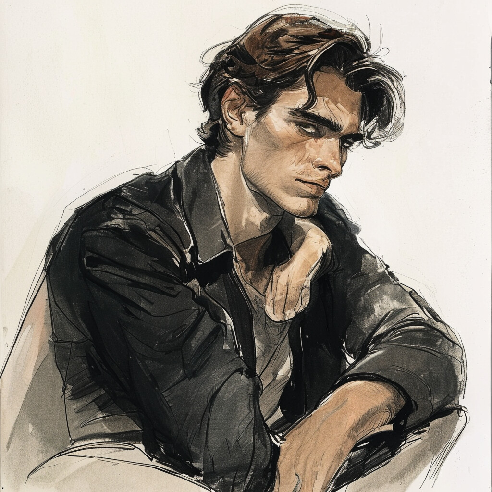
“Male character illustration by Gaston Bussiere.”
“A close-up portrait of a beautiful girl with an autumn leaves headdress and melting wax.”
“A smiling man is cooking in his kitchen.”
@inproceedings{kwon2026hierarchicalprune,
title = {{HierarchicalPrune: Position-Aware Compression for Large-Scale Diffusion Models}},
author = {Kwon, Young D. and Li, Rui and Li, Sijia and Li, Da and Bhattacharya, Sourav and Venieris, Stylianos I.},
booktitle = {Proceedings of the AAAI Conference on Artificial Intelligence (AAAI)},
year = {2026},
}